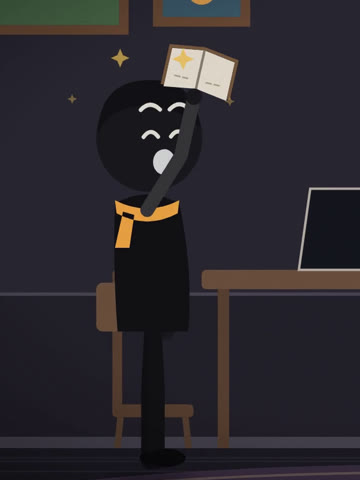

AutoTube
AutoTube is a private tool its owner uses to make animated explainers and short films and publish them to their own YouTube channels. It is not offered to the public and does not access anyone else's account.
The channels
The Minds Sketch
Psychology explained in bright, hand-drawn style: why we procrastinate, overthink, and how to change it.
youtube.com/@the-minds-sketchCoinwise Sketch
Everyday money as a story at night: inflation, compound interest, and the tricks that make us spend more than we plan.
youtube.com/@Coinwise-SketchTiny Streaknew
Wordless animated short films about building habits and beating the urges that pull us back: a small character, a day counter, one small step at a time. First film: One Page a Day.
youtube.com/@tinystreakMeet the characters
Coinwise Sketch: four people who live through each episode's money lesson.


The Minds Sketch: simple characters who act out each idea.


Tiny Streak: no narration. Pip mutters, the day counter tells the story, and a small warm light grows with every day kept.


How they feel
Characters act their feelings instead of just changing faces: a blink before the change, a reaction that settles, and the body joins in: a jolt when shocked, a slump when sad, a tremble when angry, a hop when excited.


What AutoTube does
It uses the YouTube Data API and YouTube Analytics API to upload the owner's videos, set titles, descriptions, captions and thumbnails, and read view statistics for those channels.
How a video is made
Every video goes through the same path: a topic, a script and a scene plan that are approved, voices and previews, a render that only redoes what changed, and quality checks that must all pass before anything is uploaded. Yellow marks a point where the work stops for an approval.
